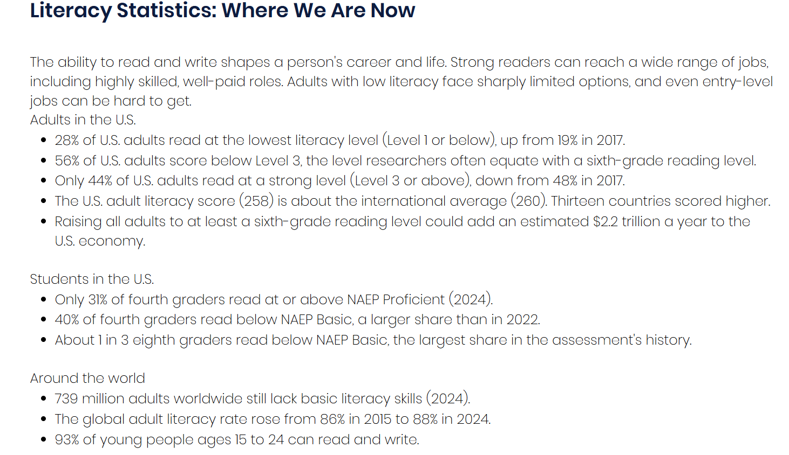

Media literacy is the ability to find information, judge whether it can
be trusted, and understand who made it and why. Today almost everyone
carries a device that delivers news, opinions, ads, and rumors in the
same scrolling feed, often with nothing to tell them apart.
The crisis is the gap between how much information people see and how
well they are prepared to evaluate it. Researchers at Stanford have
repeatedly found that young people who are comfortable with technology
still struggle to tell reliable sources from unreliable ones online.
Why It's Happening
No single thing caused this problem. Several changes in how people get
information have stacked on top of each other.
Social media algorithms that reward engagement over accuracy
A news cycle so fast that stories spread before they are checked
The decline of local journalism
AI-generated text, images, and video
Algorithms and Echo Chambers
Platforms recommend content based on what keeps people watching,
liking, and sharing. Posts that spark strong emotions tend to do
well, so exaggerated or misleading content can travel farther than
careful reporting. Over time, people see more of what they already
believe and less of anything that challenges it.
AI-Generated Content
AI tools can now produce realistic articles, photos, voices, and
videos in seconds. This makes it cheap to create convincing fake
material, and it makes people more likely to doubt real material as
well. Old advice like "look for odd details in a photo" no longer
works reliably.
The Loss of Local News
As many local newspapers have shrunk or closed, fewer reporters
cover city councils, school boards, and community events. Social
media posts and national commentary often fill that gap, and they
are less likely to be accurate or accountable to the community.
Who It Affects and How
Everyone is affected, but people who rely mostly on social media for
news, and people who have never been taught how to evaluate sources,
are especially exposed. When false claims spread, people can make
poor decisions about their health, their money, and their votes.
There is also a quieter effect. When people cannot tell what is true,
some start to distrust all news, including accurate reporting. That
lost trust makes it harder for communities to agree on basic facts,
which feeds polarization.

As the literacy crisis grows, fewer people are able to evaluate the information they see online. Source: The National Literacy Institute.
How to Spot Misinformation
Luckily, media literacy can be taught. The beginning steps take
only a few minutes and catch many false claims.
Check the source: find out who published it and where they got their information, or whether they have a history of accuracy.
Read past the headline, since headlines are often written to grab attention, and may not paint a complete picture.
Look for the original report instead of trusting a screenshot or summary.
Check the date, because old stories often resurface as if they were new.
Cross-check with other outlets to see if anyone else is reporting it.
Why Checking the Source Comes First
Researchers who study fact-checkers have found that professionals
rarely stay on an unfamiliar website to judge it. Instead, they open
new tabs and look up what other sources say about the site. This
technique is called lateral reading, and it is usually faster and
more reliable than studying the page itself.